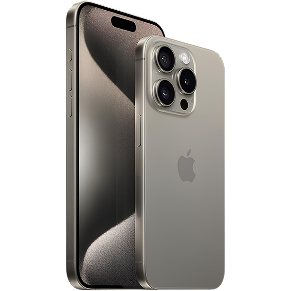

Phones
New
iPhone 16
The iPhone 16 is a masterclass in technology and design, combining cutting-edge features with unparalleled performance. Packed with the latest A18 Bionic chip, the iPhone 16 delivers lightning-fast speed and efficiency, making multitasking smoother than ever. Whether you're streaming content, gaming, or working on demanding apps, this device handles it all with ease.
Available Now
iPhone 15 (Black)
iPhone 15 (Rosa)
Samsung Galaxy S23
Samsung Galaxy S24
Frequently Asked Questions
What Phone Should I Get?
The phone you should get depends on your needs and preferences. If you want the latest technology and a premium experience, the iPhone 15 or iPhone 16 (when available) is a great choice, especially if you're already in the Apple ecosystem. For Android users, phones like the Samsung Galaxy S24 or Google Pixel 8 offer excellent performance, cameras, and features. Consider factors like budget, camera quality, battery life, and software preferences to make the best decision for you.
IOS vs Android
Choosing between iOS and Android depends on your preferences and priorities: iOS (Apple): Ideal if you value seamless integration across devices (iPhone, iPad, Mac, etc.), a polished and consistent user experience, and strong security and privacy features. iOS is also great for those who want regular updates and access to high-quality apps from the App Store. Android: Perfect for those who prefer more customization, a wider range of device options (from budget to flagship models), and flexibility with apps and settings. Android also offers better integration with Google services and is ideal if you like having more control over your phone's features.
Which Phone Has The Best Camera?
The best camera phone depends on what you prioritize in photography, but here are a few top contenders: iPhone 15 Pro/Pro Max: Known for its incredible color accuracy, advanced Night Mode, and cinematic video features. It offers a well-rounded, reliable camera system with excellent low-light performance and great video quality, making it ideal for both casual and professional photographers. Google Pixel 8 Pro: Offers exceptional computational photography, with features like Magic Eraser for photo editing, excellent low-light performance, and realistic skin tones. It’s known for its sharp image processing and is a top choice for those who love taking photos quickly and easily. Samsung Galaxy S24 Ultra: Boasts an impressive 200MP main sensor, incredible zoom capabilities, and superb dynamic range. The Galaxy S24 Ultra is great for users who want cutting-edge hardware with versatile shooting options.